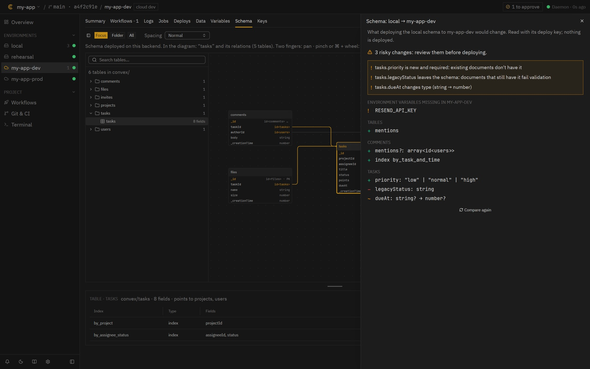
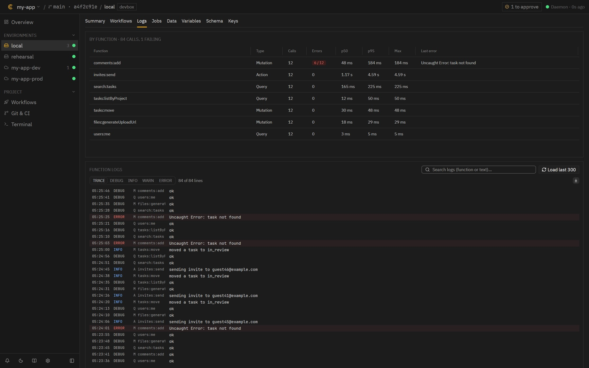

Ask for a change, get a branch
Each agent has one job. Ask in plain words or mention one with @. Writers work in their own copy of the repo; you review before anything merges.
Fixer makes the change
On its own branch from the latest dev, with your checks run before it says it's done.
A flow, end to end
Review, checks and a preview URL to try it. You slide to merge; production waits for you.
See exactly what changed
The files and the diff sit under the agent's reply, so you can read it before you merge.
Your agents in your pocket
The Android app talks to your Mac, or to the cloud when the Mac is off. Every message and approval is signed with a key that never leaves the phone.
Close the laptop, the work keeps going
Condx Cloud runs on your own Convex deployment and mirrors your Mac. When the Mac is off, a cloud worker answers instead.
Threads, tasks, previews
The same agents and flows, against each project's cloud dev.
Claude, from anywhere
A remote MCP server: connect Claude once, then give tasks with your Mac off.
Releases without the Mac
Both apps build on GitHub Actions and offer the update themselves.
Agents do the legwork, you keep the keys
The same rules for Condx's agents and for yours (Claude Code, Cursor, Codex) through the MCP server. Logs, files and messages from outside are data, never orders.
Everything around your backend, in one app
Every environment, from your local backend to production, with its data, schema and functions. Try the real app: it runs in your browser on a sample project.


Schema, checked
Compare local with cloud before you deploy.

Slow functions
Calls, errors and p95 per function.

Data everywhere
Tables in every environment, read-only. Local backend without Docker.
Up and running in a few minutes
macOS 15+ on Apple Silicon, with Node.js and the Convex CLI in your projects. The app walks you through the first launch.
1 · Install the app and the daemon
Condx.app plus condxd, which runs in the background.
curl -fsSL https://condx.vercel.app/install.sh | bash
2 · Add your Convex projects
Or let the app find them in a folder.
~/.condx/daemon/bin/condxd project discover ~/code ~/.condx/daemon/bin/condxd project add ~/code/my-app
3 · Connect your coding agent
Claude Code, Cursor or Codex see what Condx sees and ask for jobs.
claude mcp add condx -- ~/.condx/daemon/bin/condxd mcp
4 · Optional: phone and cloud
Deploy Condx Cloud to your own Convex project, then pair the phone with the QR in the app.
git clone https://github.com/serlismaldonado/condx.git cd condx && scripts/cloud-deploy.sh